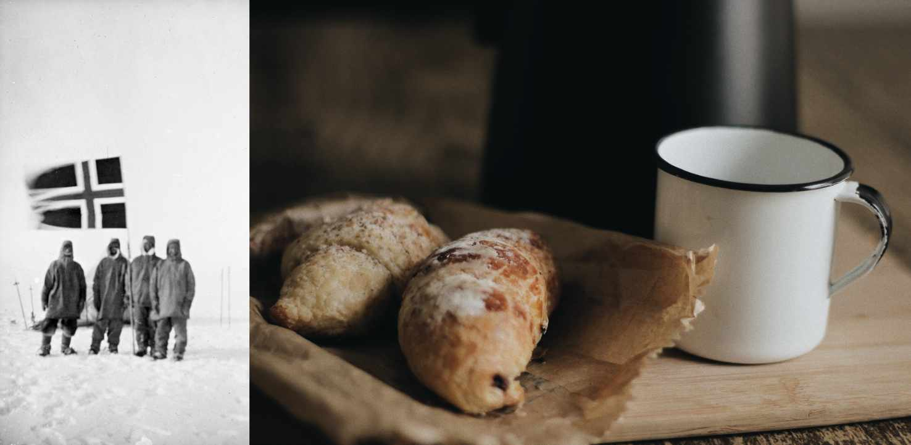
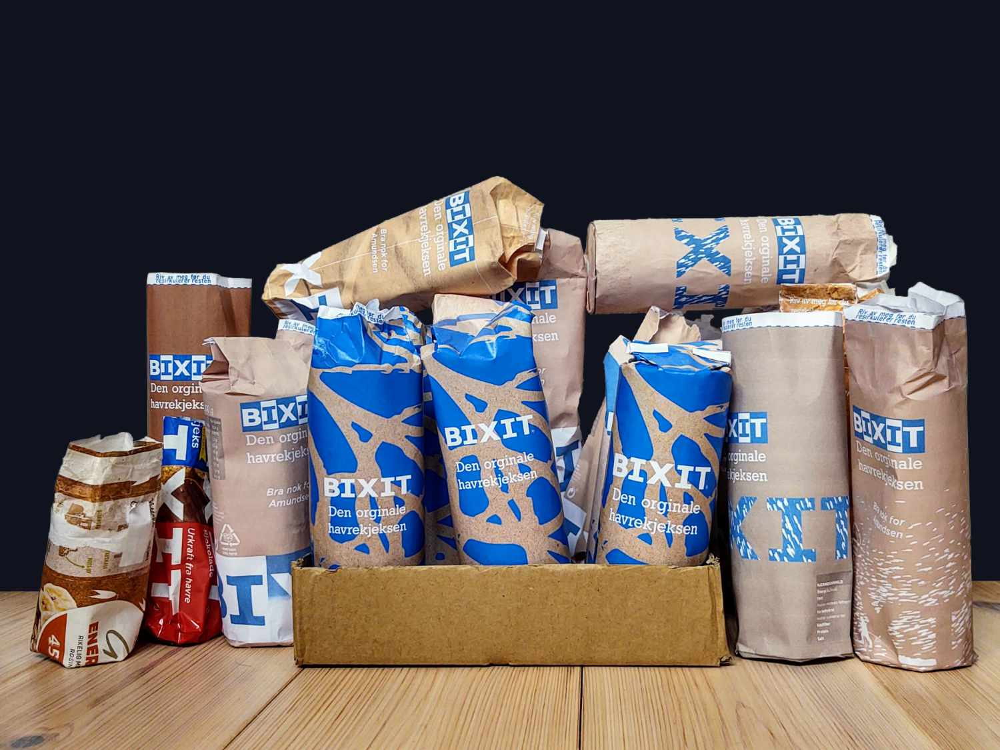
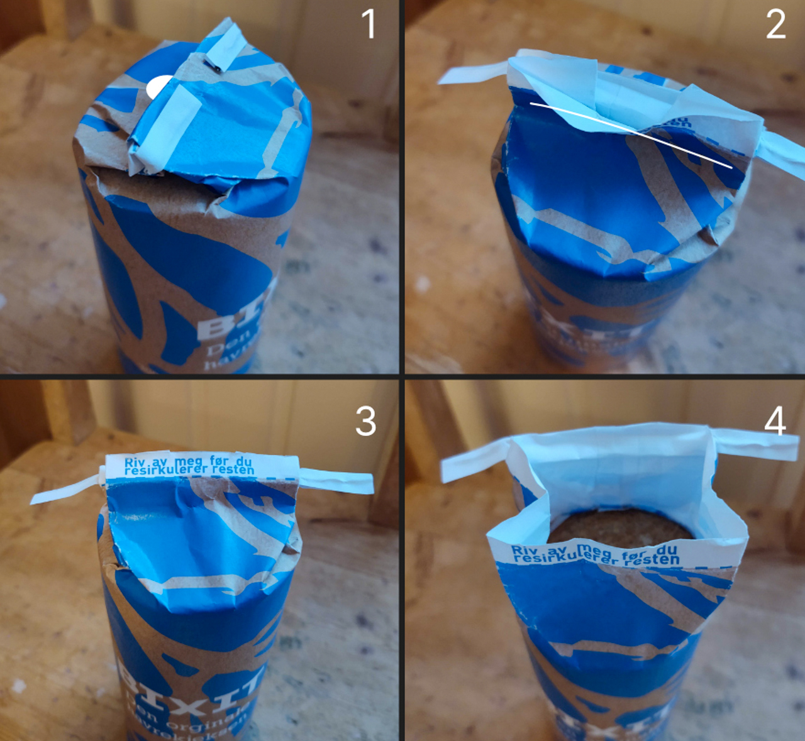
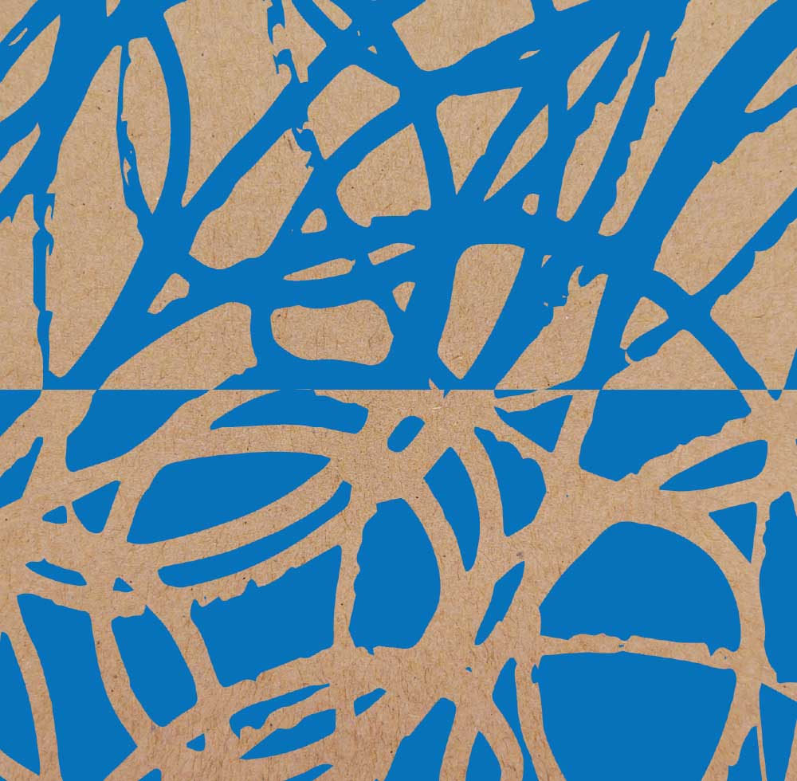
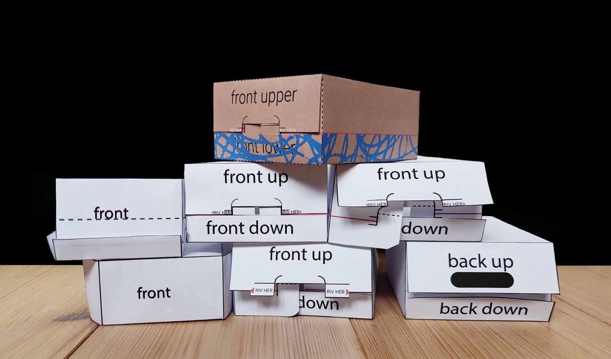
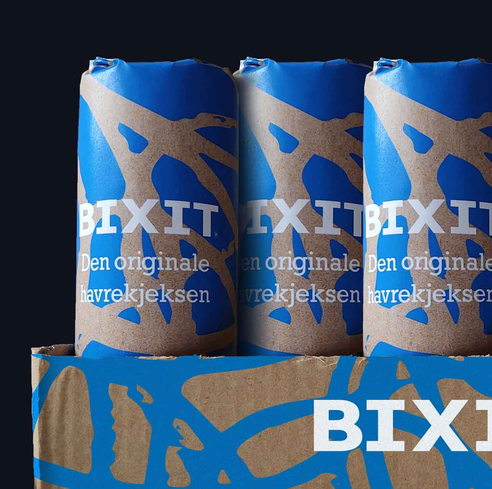

Bixit
Embalasje
2020
I faget 'emballasjedesign' jobbet vi for Sætre med å utforme en kjeksforpakning som skulle promotere for
eventyr og være tøff som få. Dette ga meg øyeblikkelig assosiasjon til den tøffeste av dem alle: Roald
Amundsen, som for øvrig allerede har historie med Sætres havrekjeks. Da han ledet ekspedisjonen til
Sydpolen i 1911 brukte de ikke plastikk for å pakke inn kjeksene sine, men heller grove papirposer eller
metallbeholdere. Jeg har brukt Amundsen som inspirasjonskilde for mitt redesign av forpakningen til
Bixits originale havrekjeks.

Du kan lese om hele prosessen her. (Åpner PDF i ny fane)

Å bruke plast som emballasje for en turkjeks er en dårlig idé fordi sannsynligheten for at den kan
havne i naturen er altfor stor. Der forsvinner den ikke før det har gått 40-50 år
(Naturvernforbundet).
Derfor er papp/papir-emballasje et mer naturlig valg, som blir nedbrutt etter max tre måneder.

1: Fliken på toppen er festet med en liten limklatt for å holde F-pak kompakt når den ligger i
D-pak.
2: Den er forseglet på innsiden ved å smelte sammen det indre vokslaget. På denne måten er pakningen
lufttett, men fremdeles enkel å åpne.
3: Grafikken forteller brukeren at man må rive av den foldbare låsemekanismen i metall før man
resirkulerer papiret. Metalltråden er også innpakket i papir (ikke plastikk, som er mer vanlig) i
tilfelle den skulle bli mistet i naturen.
4: Dermed har man en innpakning som er enkel å åpne, holde tett og komprimere ettersom kjeksene
forsvinner ned i turglade mager.

Bixit havrekjeks er en kjeks for alle, og bør derfor også appellere til alle. Abstrahering er et
glimrende verktøy å bruke i denne sammenheng fordi folk kan få ulike assosiasjoner til akkurat det
de
selv
forbinder med å være ute i det fri. Jeg endte opp med dette energiske mønstret som jeg håper vil gi
folk
assosiasjoner til den gleden og energien som ligger i å være ute i vær og vind, og generelt litt
røffe
forhold.
Bixit-logoen i hvitt står i sterk kontrast med det “bixit-blå” mønsteret og det brune papiret. Den
trykkes på i midten av kjekspakken for å fungere som blikkfang i butikkhylla.

Etter å ha snakket med en entusiastisk Kiwi-butikkansatt ble jeg oppmerksom på D-pak-en til Bixit
sjokoladekjeks. Butikkarbeideren var meget fornøyd med hvordan denne type D-pak fungerte. Den har en
indre tråd som man drar i for å rive av lokket på esken. Det eneste jeg ville utbedre var
rivekanten,
som jeg ikke synes er veldig pen. Ved å gi den nederste brettekanten riktig høyde, slipper man å
rive i
den. Man river heller av pappveggen bakenfor som ikke vil vises like tydelig.

Resultatet er en solid, praktisk og pen D-pak.

Nope, det er ikke et render.
Er du her fortsatt? Neste ->